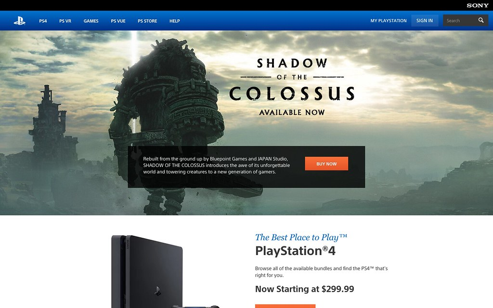
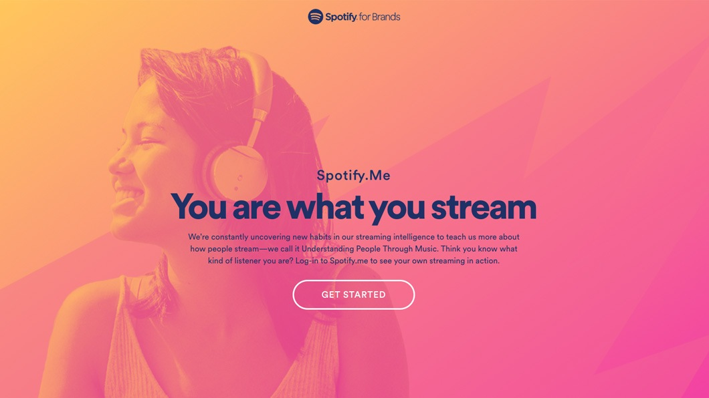

Olá, sou o Paulie!
Moro nos Estados Unidos da América e
Sou formado há 3 anos na área de engenharia de software na universidade rival UMC e formado no curso online da Microsoft sobre Data Center.
Confira aqui alguns de meus projetos mais relevantes
 |
 |
 |  |